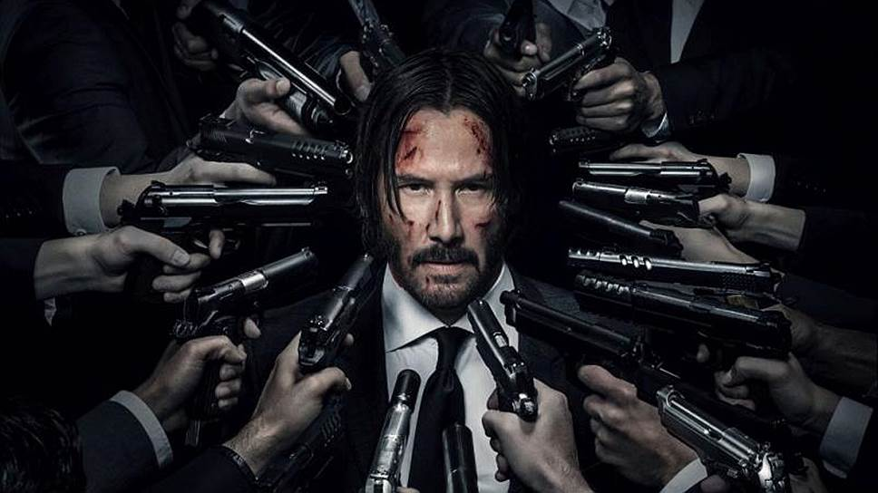

На главную
Боеви́к или э́кшен-фильм (экшн-фильм) (англ. action movie — букв. фильм действия)
— жанр кинематографа, в котором основное внимание уделяется перестрелкам, дракам,
погоням и т. д. Боевики часто обладают высоким бюджетом, изобилуют каскадёрскими
трюками и спецэффектами. Большинство боевиков иллюстрируют известный тезис «добро
должно быть с кулаками». Фильмы этого жанра зачастую не обладают сложным сюжетом,
главный герой обычно сталкивается со злом в самом очевидном его проявлении: терроризм,
похищение, убийство, коррупция, несправедливость. Не находя иного выхода, главный герой
решает прибегнуть к насилию. В развязке фильма отрицательные персонажи обычно оказываются
убиты, реже арестованы. Число убитых отрицательных персонажей и их пособников
может достигать десятков и даже сотен. Считается, что популяризация так называемой
«эстетики насилия» во многом обязана таким лентам. Фильмы, посвящённые боевым искусствам,
обычно рассматриваются как поджанр боевика.
